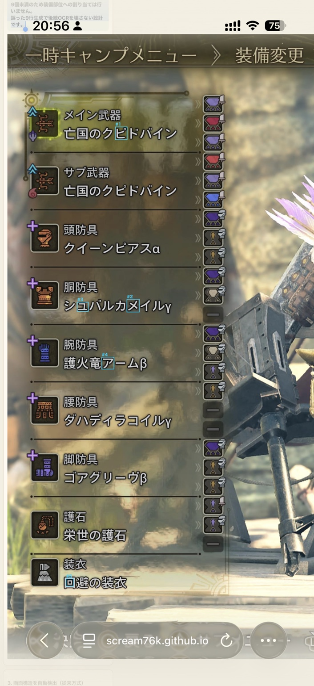
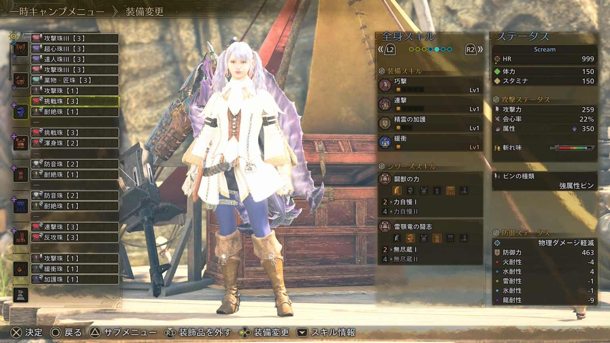

MONSTER HUNTER WILDS
スクショからビルドを取り込む
v4.6.5
装備と装飾品のスクショを順番に解析して、ビルドとして取り込みます。
TEST ENVIRONMENT
この画面ではここだけ実行① テスト用DBを取得
OCRで使用する共通DBを先に取得します。取得後、Step 1のOCRが有効になります。
準備中…0%
DB未取得：先に「DBを取得（テスト用）」を押してください
📖 どんなスクショを使えばいい？（初めての方はこちら）
この機能は、ゲーム内の装備一覧画面と装飾品一覧画面を読み取ります。迷ったら、まず下の「良い例」と同じような画面を撮ってください。

武器・防具・護石の名前が縦に並んでいる画面。

装備ごとの装飾品スロットと珠の名前が見える画面。
① 気をつける点
- ゲーム画面全体が入ったスクショがおすすめ。名前部分だけを切り抜く必要はありません。
- 文字が小さすぎない・ぼやけていない画像を使ってください。ゲーム機やPCの画面をスマホで撮影するより、ゲーム内のスクショ機能がおすすめです。
- 装備名・装飾品名の左右や上下を切らないでください。ブラウザや動画プレーヤーのUIが重なっている画像も避けてください。
- 16:9のゲーム画面が基本ですが、スマホ縦長のスクショでも解析できます。ゲーム画面が小さくなるほど文字は小さくなるため不利です。
- 装備と装飾品は別々のスクショにしてください。
✓ 迷ったら「ゲーム内スクショ → 元画像のままアップロード」が基本です。
② PS5なら「PS App」がおすすめ
- PS5で装備画面を開き、コントローラーのクリエイトボタンからスクリーンショットを撮る。
- PS5とPS Appを連携し、ゲームキャプチャーを有効にする。
- PS Appの［ライブラリー］→［キャプチャー］から画像を開く。
- ［ダウンロード］してiPhoneなどに保存し、この画面からアップロードする。
PS Appでは対応するPS5キャプチャーをクラウド経由で確認・端末保存できます。自動アップロードを使う場合はPS5側の設定も確認してください。PlayStation公式の手順を見る。
③ Steam（PC）なら
- ゲーム内でF12を押してSteamのスクリーンショットを撮る（キーはSteam設定で変更できます）。
- Steamのスクリーンショット管理から画像を確認し、必要なら「ディスク上で表示」して元画像を取得する。
- PCでこのページを開いて、そのPNG/JPGをそのままアップロードするのが簡単です。
Steam公式仕様では、スクリーンショットの標準ショートカットはF12です。Steam公式ドキュメントを見る。
④ こういう場合はうまくいかないことがあります
- スマホでテレビ画面を撮影して反射・ピンぼけ・モアレがある
- 画像を強く圧縮して、装備名の文字がつぶれている
- 装備名や装飾品名の端が切れている
- YouTube等の動画から切り出した画像で、字幕・再生UI・黒帯が画面に重なっている
- ゲーム画面が極端に小さく、周囲に大量の余白がある
- 装備画面ではなく、装備の詳細説明だけが表示されている
うまく読めなくても、すぐにやり直す必要はありません。解析後の「要確認」で候補を選べるようにしています。
STEP 1
7部位武器・防具・護石を取り込む
① スクショを選ぶ装備画面
画像はまだ選択されていません
—
準備中…0%
画像確認装備検出OCRDB照合
装備スクショを選択してください
STEP 2
装飾品を取り込む
① スクショを選ぶ任意
画像はまだ選択されていません
—
準備中…0%
画像確認グループ検出OCRDB照合
装飾品スクショはスキップできます
STEP 3
ビルドを確定させて取り込む
Step 1・2で確定した内容がここに表示されます。
装備を解析すると、ここに最終確認が表示されます
使い方と注意
装備・装飾品DBはシミュレータのトップで一括取得します。この画面ではDB取得操作は行いません。
自動確定できない装備・装飾品だけ確認をお願いします。スロットLvは装備側の「上限」であり、装着した珠のLvを強制しません。
スクショを確認